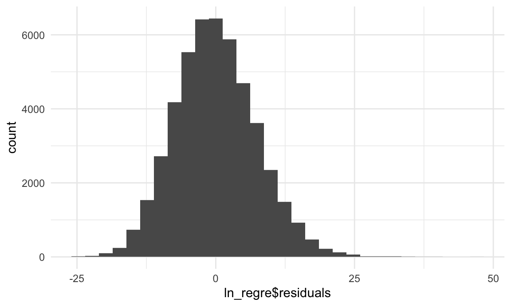

second_regression
2021/11/15
Section Introduction
In the first regression analysis, we have known that there are some factors significantly contributing to the number of winnings, especially some factors about three-pointer. In this section, we will continue explore the relationships between factors of all aspects and the scores made in every game, by using data from every game in the last 20 years in NBA and using logistic regression to analyze what factors might affect the game’s score to try to find out what New York Knicks needs to improve for achieving higher score.
knitr::opts_chunk$set(
fig.width = 6,
fig.asp = .6,
out.width = "90%"
)
theme_set(theme_minimal() + theme(legend.position = "bottom"))
options(
ggplot2.continuous.colour = "viridis",
ggplot2.continuous.fill = "viridis"
)
scale_colour_discrete = scale_colour_viridis_d
scale_fill_discrete = scale_fill_viridis_dData Scrapping function
use function to get data - define a function to scrap data from NBA.stat
scrapping_data = function(url) {
headers = headers = c(
`Connection` = 'keep-alive',
`Accept` = 'application/json, text/plain, */*',
`x-nba-stats-token` = 'true',
`X-NewRelic-ID` = 'VQECWF5UChAHUlNTBwgBVw==',
`User-Agent` = 'Mozilla/5.0 (Macintosh; Intel Mac OS X 10_15_7) AppleWebKit/537.36 (KHTML, like Gecko) Chrome/95.0.4638.69 Safari/537.36',
`x-nba-stats-origin` = 'stats',
`Sec-Fetch-Site` = 'same-origin',
`Sec-Fetch-Mode` = 'cors',
`Referer` = 'https://stats.nba.com/players/leaguedashplayerbiostats/',
`Accept-Encoding` = 'gzip, deflate, br',
`Accept-Language` = 'en-US,en;q=0.9')
response = GET(url, add_headers(headers))
data = fromJSON(content(response, as = "text"))
df = data.frame(data$resultSets$rowSet[[1]], stringAsFactors = FALSE)
names(df) = tolower(data$resultSets$headers[[1]])
return(df)
}Box scores dataset
get data from 2001-02 season to 2020-21 season
season_years = c("2020-21", "2019-20",
"2018-19", "2017-18",
"2016-17", "2015-16",
"2014-15", "2013-14",
"2012-13", "2011-12",
"2010-11", "2009-10",
"2008-09", "2007-08",
"2006-07", "2005-06",
"2004-05", "2003-04",
"2002-03", "2001-02")
box_score_all = tibble(season_year = season_years)
box_score_all =
box_score_all %>%
mutate(url = str_c("https://stats.nba.com/stats/teamgamelogs?DateFrom=&DateTo=&GameSegment=&LastNGames=0&LeagueID=00&Location=&MeasureType=Base&Month=0&OpponentTeamID=0&Outcome=&PORound=0&PaceAdjust=N&PerMode=Totals&Period=0&PlusMinus=N&Rank=N&Season=", season_year, "&SeasonSegment=&SeasonType=Regular+Season&ShotClockRange=&VsConference=&VsDivision=")) %>%
mutate(box_score = map(url, scrapping_data))As the last column of each box score is NA, so we need to drop this column
drop_last_column = function(df) {
df = df %>% select(- names(df)[[57]])
return(df)
}
box_score_all =
box_score_all %>%
mutate(box_score = map(box_score, drop_last_column))
box_score_all =
box_score_all %>%
select(-season_year, -url) %>%
unnest(cols = box_score)The box_score_all dataset contains 47830 games’ data from season 2012-2013 to season 2020-2021, which includes 56 variables. We are going to use some of them in the following exploratory data analysis.
Descriptive Statistics
We should delete some variables which are not applicable for regression analysis, like season_year, team_id and some rank variables.Then select the reasonable variables to analyze to create a data set called “regre_df”, and use regre_df to draw boxplots of comparison of winning team and losing team.
These are some reasonable variables that should be added into the regression model:
- wl: Win/Loss
- min: minutes
- pts: Points
- fgm: Field Goals Made
- fga: Field Goals Attempted
- fg_pct: Field Goal Percentage
- fg3m: 3 Point Field Goals Made
- fg3a: 3 Point Field Goals Attempted
- fg3_pct: 3 Point Field Goals Percentage
- ftm: Free Throws Made
- fta: Free Throws Attempted
- ft_pct: Free Throw Percentage
- oreb: Offensive Rebounds
- dreb: Defensive Rebounds
- reb: Rebounds
- ast: Assists
- stl: STL
- blk: Blocks
- blka: Blocks Attempted
- tov: Turnovers
- pf: Personal Fouls
- pfd: Personal Fouls Drawn
- plus_minus: Plus-Minus
In order to build logistic regression model, we will replace win/loss with 1/0. Then draw boxplots of every variable to compare the characteristics of winning and losing teams.
regre_df =
box_score_all %>%
select(-c(1:7)) %>%
select(-ends_with("rank")) %>%
mutate(wl = recode(wl, "W" = 1, "L" = 0),
wl = as.factor(wl))
fgm_box =
regre_df %>%
group_by(wl) %>%
mutate(fgm = as.numeric(fgm)) %>%
ggplot(aes(x = wl, y = fgm, group=wl)) +
geom_boxplot() +
theme(axis.text.y = element_text(size=4))
fga_box =
regre_df %>%
group_by(wl) %>%
mutate(fga = as.numeric(fga)) %>%
ggplot(aes(x = wl, y = fga, group=wl)) +
geom_boxplot() +
theme(axis.text.y = element_text(size=4))
fgpct_box =
regre_df %>%
group_by(wl) %>%
mutate(fg_pct = as.numeric(fg_pct)) %>%
ggplot(aes(x = wl, y = fg_pct, group=wl)) +
geom_boxplot() +
theme(axis.text.y = element_text(size=4))
fg3m_box =
regre_df %>%
group_by(wl) %>%
mutate(fg3m = as.numeric(fg3m)) %>%
ggplot(aes(x = wl, y = fg3m, group=wl)) +
geom_boxplot() +
theme(axis.text.y = element_text(size=4))
fg3a_box =
regre_df %>%
group_by(wl) %>%
mutate(fg3a = as.numeric(fg3a)) %>%
ggplot(aes(x = wl, y = fg3a, group=wl)) +
geom_boxplot() +
theme(axis.text.y = element_text(size=4))
fg3pct_box =
regre_df %>%
group_by(wl) %>%
mutate(fg3_pct = as.numeric(fg3_pct)) %>%
ggplot(aes(x = wl, y = fg3_pct, group=wl)) +
geom_boxplot() +
theme(axis.text.y = element_text(size=4))
ftm_box =
regre_df %>%
group_by(wl) %>%
mutate(ftm = as.numeric(ftm)) %>%
ggplot(aes(x = wl, y = ftm, group=wl)) +
geom_boxplot() +
theme(axis.text.y = element_text(size=4))
fta_box =
regre_df %>%
group_by(wl) %>%
mutate(ftm = as.numeric(fta)) %>%
ggplot(aes(x = wl, y = fta, group=wl)) +
geom_boxplot() +
theme(axis.text.y = element_text(size=4))
ftpct_box =
regre_df %>%
group_by(wl) %>%
mutate(ft_pct = as.numeric(ft_pct)) %>%
ggplot(aes(x = wl, y = ft_pct, group=wl)) +
geom_boxplot() +
theme(axis.text.y = element_text(size=4))
oreb_box =
regre_df %>%
group_by(wl) %>%
mutate(oreb = as.numeric(oreb)) %>%
ggplot(aes(x = wl, y = oreb, group=wl)) +
geom_boxplot() +
theme(axis.text.y = element_text(size=4))
dreb_box =
regre_df %>%
group_by(wl) %>%
mutate(dreb = as.numeric(dreb)) %>%
ggplot(aes(x = wl, y = dreb, group=wl)) +
geom_boxplot() +
theme(axis.text.y = element_text(size=4))
reb_box =
regre_df %>%
group_by(wl) %>%
mutate(reb = as.numeric(reb)) %>%
ggplot(aes(x = wl, y = reb, group=wl)) +
geom_boxplot() +
theme(axis.text.y = element_text(size=4))
ast_box =
regre_df %>%
group_by(wl) %>%
mutate(ast = as.numeric(ast)) %>%
ggplot(aes(x = wl, y = ast, group=wl)) +
geom_boxplot() +
theme(axis.text.y = element_text(size=4))
tov_box =
regre_df %>%
group_by(wl) %>%
mutate(tov = as.numeric(tov)) %>%
ggplot(aes(x = wl, y = tov, group=wl)) +
geom_boxplot() +
theme(axis.text.y = element_text(size=4))
stl_box =
regre_df %>%
group_by(wl) %>%
mutate(stl = as.numeric(stl)) %>%
ggplot(aes(x = wl, y = stl, group=wl)) +
geom_boxplot() +
theme(axis.text.y = element_text(size=4))
blk_box =
regre_df %>%
group_by(wl) %>%
mutate(blk = as.numeric(blk)) %>%
ggplot(aes(x = wl, y = blk, group=wl)) +
geom_boxplot() +
theme(axis.text.y = element_text(size=4))
blka_box =
regre_df %>%
group_by(wl) %>%
mutate(blka = as.numeric(blka)) %>%
ggplot(aes(x = wl, y = blka, group=wl)) +
geom_boxplot() +
theme(axis.text.y = element_text(size=4))
pf_box =
regre_df %>%
group_by(wl) %>%
mutate(pf = as.numeric(pf)) %>%
ggplot(aes(x = wl, y = pf, group=wl)) +
geom_boxplot() +
theme(axis.text.y = element_text(size=4))
pfd_box =
regre_df %>%
group_by(wl) %>%
mutate(pfd = as.numeric(pfd)) %>%
ggplot(aes(x = wl, y = pfd, group=wl)) +
geom_boxplot() +
theme(axis.text.y = element_text(size=4))
pts_box =
regre_df %>%
group_by(wl) %>%
mutate(pts = as.numeric(pts)) %>%
ggplot(aes(x = wl, y = pts, group=wl)) +
geom_boxplot() +
theme(axis.text.y = element_text(size=4))
pm_box =
regre_df %>%
group_by(wl) %>%
mutate(plus_minus = as.numeric(plus_minus)) %>%
ggplot(aes(x = wl, y = plus_minus, group=wl)) +
geom_boxplot() +
theme(axis.text.y = element_text(size=4))
(fgm_box + fga_box + fgpct_box) / (fg3m_box + fg3a_box + fg3pct_box)(ftm_box + fta_box + ftpct_box)/(oreb_box + dreb_box + reb_box)(ast_box + tov_box + stl_box) /(blk_box + blka_box + pf_box)pfd_box + pts_box + pm_boxAccording to boxplots of winning and losing teams, we can find that there are some obvious difference in some aspects, like fg_pct, fg3_pct, pts and etc.
Corralation Map
Further, we can draw a correlation map to exam correlation of variables to help us select variables when building model.
regre_df =
regre_df %>%
mutate(
min = as.numeric(min),
fgm = as.numeric(fgm),
fga = as.numeric(fga),
fg_pct = as.numeric(fg_pct),
fg3m = as.numeric(fg3m),
fg3a = as.numeric(fg3a),
fg3_pct = as.numeric(fg3_pct),
ftm = as.numeric(ftm),
fta = as.numeric(fta),
ft_pct = as.numeric(ft_pct),
oreb = as.numeric(oreb),
dreb = as.numeric(dreb),
reb = as.numeric(reb),
ast = as.numeric(ast),
tov = as.numeric(tov),
stl = as.numeric(stl),
blk = as.numeric(blk),
blka = as.numeric(blka),
pf = as.numeric(pf),
pfd = as.numeric(pfd),
pts = as.numeric(pts),
plus_minus = as.numeric(plus_minus)
)
corr <- cor(regre_df[-1])
corrplot(corr, method = "square", order = "FPC")
Based on this plot, we can see that there are some strong correlation between some variables, like ftm and fta, dreb and reb. We will select one variable from a pair of variables that have correlation score which is more than 0.5. Therefore we can select variables which have no strong correlation with others.
Linear Regression
Variable description
After ruling out variables with strong correlation, we include variables as follow: Dependent variable is the score of each game, denoted by pts (points). Independent variables are selected from both offensive aspect and defensive aspect.
For the offensive level, variables include:
- fg3_pct: proportion of three points shooting
- fg_pct: proportion of field goals attempted
- fg_pct: proportion of free throw
- oreb: average offensive rebounds per game
- ast: average assists per games
As for the defensive level, variables include:
- stl: steals of each game
- blk: blocks of each game
- dreb: defensive rebounds of each game
- tov: turnovers of each game
- pf: personal foul of each game
Modelling
Use step function to choose a model by AIC in a Stepwise algorithm.
ln_regre = lm(pts ~fg_pct+fg3_pct+ft_pct+oreb+dreb+ast+stl+blk+tov+pf,data = regre_df)
summary(ln_regre)##
## Call:
## lm(formula = pts ~ fg_pct + fg3_pct + ft_pct + oreb + dreb +
## ast + stl + blk + tov + pf, data = regre_df)
##
## Residuals:
## Min 1Q Median 3Q Max
## -25.617 -5.038 -0.342 4.710 46.223
##
## Coefficients:
## Estimate Std. Error t value Pr(>|t|)
## (Intercept) -25.229423 0.515913 -48.90 <2e-16 ***
## fg_pct 138.594897 0.803307 172.53 <2e-16 ***
## fg3_pct 14.564180 0.325892 44.69 <2e-16 ***
## ft_pct 24.290515 0.331887 73.19 <2e-16 ***
## oreb 0.802525 0.009228 86.96 <2e-16 ***
## dreb 0.563889 0.006492 86.86 <2e-16 ***
## ast 0.487421 0.008136 59.91 <2e-16 ***
## stl 0.565725 0.011870 47.66 <2e-16 ***
## blk -0.152531 0.013351 -11.43 <2e-16 ***
## tov -0.682900 0.008899 -76.74 <2e-16 ***
## pf 0.404912 0.007667 52.81 <2e-16 ***
## ---
## Signif. codes: 0 '***' 0.001 '**' 0.01 '*' 0.05 '.' 0.1 ' ' 1
##
## Residual standard error: 7.334 on 47819 degrees of freedom
## Multiple R-squared: 0.6916, Adjusted R-squared: 0.6916
## F-statistic: 1.072e+04 on 10 and 47819 DF, p-value: < 2.2e-16linear.step = step(ln_regre,direction="both")## Start: AIC=190616
## pts ~ fg_pct + fg3_pct + ft_pct + oreb + dreb + ast + stl + blk +
## tov + pf
##
## Df Sum of Sq RSS AIC
## <none> 2572088 190616
## - blk 1 7021 2579109 190744
## - fg3_pct 1 107426 2679514 192571
## - stl 1 122170 2694258 192834
## - pf 1 150024 2722112 193325
## - ast 1 193050 2765138 194076
## - ft_pct 1 288123 2860211 195692
## - tov 1 316762 2888850 196169
## - dreb 1 405789 2977877 197621
## - oreb 1 406778 2978867 197637
## - fg_pct 1 1601094 4173182 213762summary(linear.step)##
## Call:
## lm(formula = pts ~ fg_pct + fg3_pct + ft_pct + oreb + dreb +
## ast + stl + blk + tov + pf, data = regre_df)
##
## Residuals:
## Min 1Q Median 3Q Max
## -25.617 -5.038 -0.342 4.710 46.223
##
## Coefficients:
## Estimate Std. Error t value Pr(>|t|)
## (Intercept) -25.229423 0.515913 -48.90 <2e-16 ***
## fg_pct 138.594897 0.803307 172.53 <2e-16 ***
## fg3_pct 14.564180 0.325892 44.69 <2e-16 ***
## ft_pct 24.290515 0.331887 73.19 <2e-16 ***
## oreb 0.802525 0.009228 86.96 <2e-16 ***
## dreb 0.563889 0.006492 86.86 <2e-16 ***
## ast 0.487421 0.008136 59.91 <2e-16 ***
## stl 0.565725 0.011870 47.66 <2e-16 ***
## blk -0.152531 0.013351 -11.43 <2e-16 ***
## tov -0.682900 0.008899 -76.74 <2e-16 ***
## pf 0.404912 0.007667 52.81 <2e-16 ***
## ---
## Signif. codes: 0 '***' 0.001 '**' 0.01 '*' 0.05 '.' 0.1 ' ' 1
##
## Residual standard error: 7.334 on 47819 degrees of freedom
## Multiple R-squared: 0.6916, Adjusted R-squared: 0.6916
## F-statistic: 1.072e+04 on 10 and 47819 DF, p-value: < 2.2e-16The adjusted R square for the full model is 0.6916, that is to say 69.16% of variances in the response variable can be explained by the predictors.
Model diagnostic
1). to check if the error term is normally distributed with mean 0.
ggplot(data = ln_regre , aes(x = ln_regre$residuals)) + geom_histogram()## `stat_bin()` using `bins = 30`. Pick better value with `binwidth`.
Condition 1 is met.
2). to check if the error term is independent of the dependent variable.
ggplot(data = ln_regre, aes(x = ln_regre$fitted.values, y = ln_regre$residuals)) + geom_point() + geom_smooth(method = "lm")## `geom_smooth()` using formula 'y ~ x'
Condition 2 is met as we cannot see an obvious tendency of errors.
Interpretation of model coefficients
According to model ln_regre,the equation will look like this. 
All variables selected are significant in this linear regression model.
For each additional 0.1 of proportion of field goals attempted, the points will increase 13.9.
For each additional 0.1 of proportion three points shooting, the points will increase 1.45.
For each additional 0.1 of proportion of free throw, the points will increase 2.43.
For each additional 1 of offensive rebounds per game, the points will increase 0.8.
For each additional 1 of defensive rebounds per games, the points will increase 0.56.
For each additional 1 of steals per game, the points will increase 0.57.
For each additional 1 of assists per game, the points will increase 0.45.
For each additional 1 of blocks per game, the points will decrease 0.15.
For each additional 1 of turnovers per game, the points will decrease 0.68.
For each additional 1 of personal foul per game, the points will decrease 0.4.
Logistic Regression
Separate data as 80% training data and 20% testing data for prediction.
set.seed(22)
train.index <- sample(x=1:nrow( regre_df), size=ceiling(0.9*nrow(regre_df)))
train = regre_df[train.index, ]
test =regre_df[-train.index, ]Modelling
Build logistic regression model with Step methods in both directions.
lg_regre<-glm(wl~fg_pct+fg3_pct+ft_pct+oreb+dreb+ast+stl+blk+tov+pf,data =train, family = "binomial",control = list(maxit=1000))
summary(lg_regre)##
## Call:
## glm(formula = wl ~ fg_pct + fg3_pct + ft_pct + oreb + dreb +
## ast + stl + blk + tov + pf, family = "binomial", data = train,
## control = list(maxit = 1000))
##
## Deviance Residuals:
## Min 1Q Median 3Q Max
## -3.3302 -0.6406 0.0198 0.6309 3.2524
##
## Coefficients:
## Estimate Std. Error z value Pr(>|z|)
## (Intercept) -25.150274 0.282380 -89.06 <2e-16 ***
## fg_pct 30.300719 0.394694 76.77 <2e-16 ***
## fg3_pct 4.300476 0.132209 32.53 <2e-16 ***
## ft_pct 3.626952 0.133934 27.08 <2e-16 ***
## oreb 0.169106 0.003828 44.18 <2e-16 ***
## dreb 0.237543 0.003153 75.35 <2e-16 ***
## ast -0.040846 0.003216 -12.70 <2e-16 ***
## stl 0.263265 0.005102 51.60 <2e-16 ***
## blk 0.120397 0.005340 22.55 <2e-16 ***
## tov -0.177678 0.003778 -47.03 <2e-16 ***
## pf -0.067135 0.003050 -22.01 <2e-16 ***
## ---
## Signif. codes: 0 '***' 0.001 '**' 0.01 '*' 0.05 '.' 0.1 ' ' 1
##
## (Dispersion parameter for binomial family taken to be 1)
##
## Null deviance: 59676 on 43046 degrees of freedom
## Residual deviance: 35814 on 43036 degrees of freedom
## AIC: 35836
##
## Number of Fisher Scoring iterations: 5logit.step = step(lg_regre,direction="both")## Start: AIC=35835.62
## wl ~ fg_pct + fg3_pct + ft_pct + oreb + dreb + ast + stl + blk +
## tov + pf
##
## Df Deviance AIC
## <none> 35814 35836
## - ast 1 35976 35996
## - pf 1 36310 36330
## - blk 1 36335 36355
## - ft_pct 1 36576 36596
## - fg3_pct 1 36932 36952
## - oreb 1 37957 37977
## - tov 1 38287 38307
## - stl 1 38869 38889
## - dreb 1 43635 43655
## - fg_pct 1 44015 44035summary(logit.step)##
## Call:
## glm(formula = wl ~ fg_pct + fg3_pct + ft_pct + oreb + dreb +
## ast + stl + blk + tov + pf, family = "binomial", data = train,
## control = list(maxit = 1000))
##
## Deviance Residuals:
## Min 1Q Median 3Q Max
## -3.3302 -0.6406 0.0198 0.6309 3.2524
##
## Coefficients:
## Estimate Std. Error z value Pr(>|z|)
## (Intercept) -25.150274 0.282380 -89.06 <2e-16 ***
## fg_pct 30.300719 0.394694 76.77 <2e-16 ***
## fg3_pct 4.300476 0.132209 32.53 <2e-16 ***
## ft_pct 3.626952 0.133934 27.08 <2e-16 ***
## oreb 0.169106 0.003828 44.18 <2e-16 ***
## dreb 0.237543 0.003153 75.35 <2e-16 ***
## ast -0.040846 0.003216 -12.70 <2e-16 ***
## stl 0.263265 0.005102 51.60 <2e-16 ***
## blk 0.120397 0.005340 22.55 <2e-16 ***
## tov -0.177678 0.003778 -47.03 <2e-16 ***
## pf -0.067135 0.003050 -22.01 <2e-16 ***
## ---
## Signif. codes: 0 '***' 0.001 '**' 0.01 '*' 0.05 '.' 0.1 ' ' 1
##
## (Dispersion parameter for binomial family taken to be 1)
##
## Null deviance: 59676 on 43046 degrees of freedom
## Residual deviance: 35814 on 43036 degrees of freedom
## AIC: 35836
##
## Number of Fisher Scoring iterations: 5Interpretation of model coefficients
For logistic regression, we can explain variables from the perspective of odds.
All variables selected are significant in this logistic regression model.
For each additional 1 of proportion of field goals attempted, the odds of win over loss will become e^30.300719 times.
For each additional 1 of proportion three points shooting, the odds of win over loss will become e^4.300476 times.
For each additional 1 of proportion of free throw, the odds of win over loss will become e^3.626952 times.
For each additional 1 of offensive rebounds per game, the odds of win over loss will become e^0.169106 times.
For each additional 1 of defensive rebounds per games, the odds of win over loss will become e^0.237543 times.
For each additional 1 of steals per game, the odds of win over loss will become e^0.263265 times.
For each additional 1 of assists per game, the odds of win over loss will become e^(-0.040846) times.
For each additional 1 of blocks per game, the odds of win over loss will become e^0.120397 times.
For each additional 1 of turnovers per game, the odds of win over loss will become e^(-0.177678) times.
For each additional 1 of personal foul per game, the odds of win over loss will become e^(-0.067135) times.
Calculate prediction accuracy.
probabilities <- lg_regre %>% predict(test, type = "response")
head(probabilities)## 1 2 3 4 5 6
## 0.9599067 0.1557291 0.9642265 0.4626808 0.9066939 0.4378931contrasts(test$wl)## 1
## 0 0
## 1 1predicted.classes <- ifelse(probabilities > 0.5, "1", "0")
head(predicted.classes)## 1 2 3 4 5 6
## "1" "0" "1" "0" "1" "0"mean(predicted.classes == test$wl)## [1] 0.8053523Using the logistic model of all variables we selected, the prediction accuracy is 0.8053523.
Conclusion
We have built both linear and logistic regression based on the NBA data. The adjusted R square for the linear regression model is 0.6916, which can explain the game score in a large extent. And the prediction of the logistic regression model is 0.8053523, which can help us to predict the result of a game more accurately.
There are some variables that can positively attribute to the winning of a game in both two models, like proportion of field goals attempted, proportion three points shooting and proportion of free throw, which can instruct the Knicks to pay more attention on these aspects in daily training.
There is variable that can negatively attribute to the winning of a game in both two models, turnovers, which can instruct the Knicks to avoid this action in games.